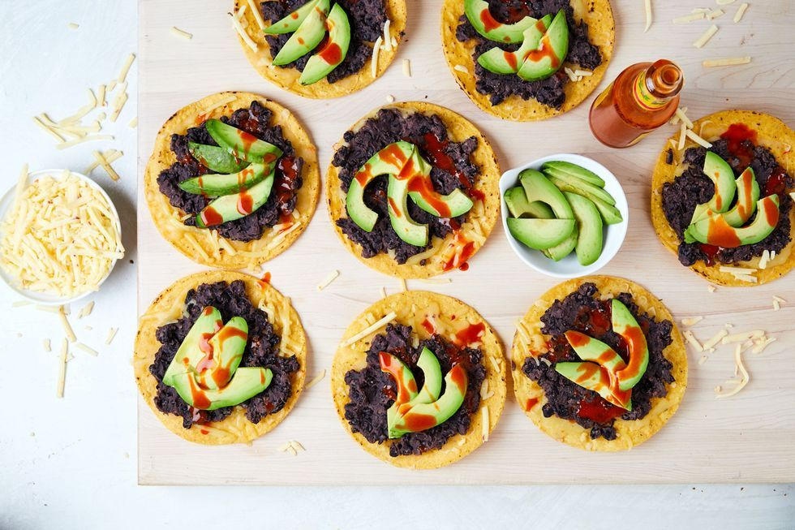

Black Bean Tostadas

Description
With only 5 ingredients these black bean tostadas are the easiest and fastest meal to throw together. You can always add on additional toppings like corn salsa, avocado ranch, or endless crunchy veggies like radishes or pickled red onions, but here we keep things simple. With ingredients you're likely to have on hand, these tostadas make for a last minute, easy meal you'll have on repeat.
Ingredients
- 2 (15-oz.) cans black beans, rinsed and drained
- 8 tostadas
- 2 c. shredded pepper jack
- Avocado, sliced
- Hot sauce
Steps
- Preheat oven to 350°. In a small saucepan over medium heat, add beans and 1 cup of water. Bring to a simmer and let simmer until beans are warmed through, about 10 minutes. Smash with a wooden spoon until most of the beans are smashed with some whole remaining. Add more water as needed to help create a smoother consistency.
- Meanwhile, place tostadas on a large baking sheet and sprinkle cheese evenly over each. Bake until cheese is melty, about 5 minutes.
- Top tostadas with beans, avocado slices, and hot sauce.